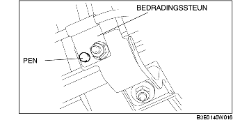

PLAATSEN/VERWIJDEREN LAMBDASENSOR [LF]
B3E014018860W09
-
Waarschuwing
-
• Als de motor en het uitlaatsysteem heet zijn, kunnen ze ernstige brandwonden veroorzaken. Zet de motor uit en wacht tot beide afgekoeld zijn alvorens het uitlaatsysteem te verwijderen.
1. Verwijder de accukap.
2. Neem de minkabel van de accu los.
3. Verwijder de afdekkap.
4. Neem de stekker van de lambdasensor los.
5. Verwijder de onderdelen in de aangegeven volgorde, zie de tabel.
.
|
1
|
Voorste lambdasensor
|
|
2
|
Bedradingssteun
|
|
3
|
Achterste lambdasensor
|
Aanwijzing voor verwijderen - lambdasensor
1. Verwijder de lambdasensor met SST.
Aanwijzing voor plaatsen - bedradingssteun
-
Aanwijzing
-
• Het kan zijn dat er geen pen is. Als er geen pen is, houd dan de bedradingssteun tegen en draai de moer vast.
